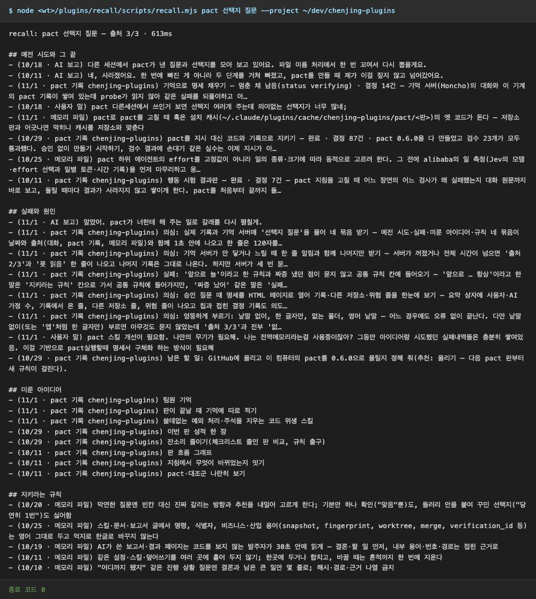
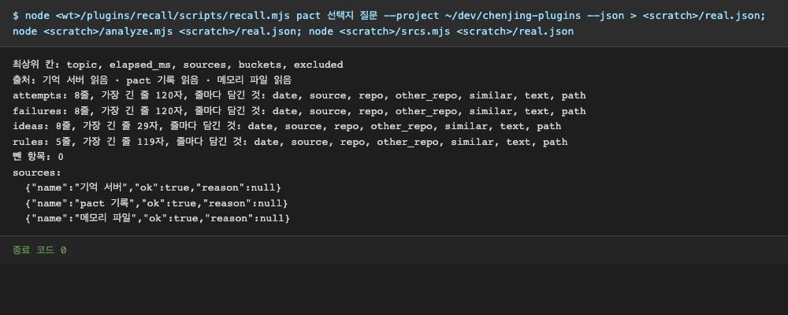
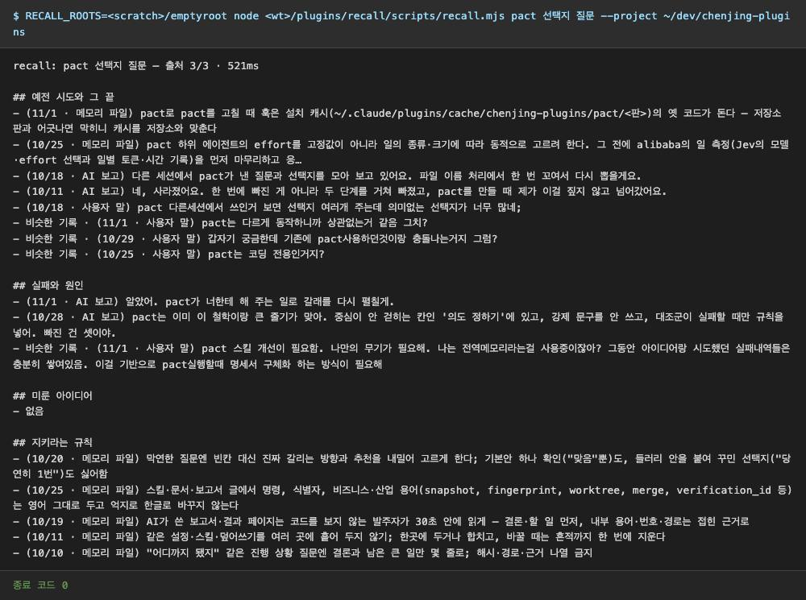
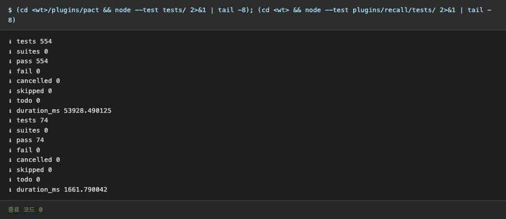

의심 실제 기록과 기억 서버에 '선택지 질문'을 물어 네 묶음 받기
예전 시도·실패·미룬 아이디어·규칙 네 묶음이 날짜와 출처(대화, pact 기록, 메모리 파일)와 함께 1초 안에 나오고 한 줄은 120자를 넘지 않는다. 앞 판과 같이 앞뒤 없이 잘린 AI 대답("네, 사라졌어요…", "알았어. … 갈래를 다시 펼칠게")이 '예전 시도'·'실패' 칸에 섞여 나와 첫 메시지가 어수선해질 수 있어 의심으로 둔다.
기억 서버에서 온 AI 보고 요지가 앞뒤 없이 잘려 보이는 줄이 섞입니다. 상태 머리말은 벗기게 고쳤고, 나머지는 요지 한 줄만 쓰는 규칙(원문 금지) 때문에 생기는 것이라 이번 판에서는 둡니다. 다음 판에서 요지를 첫 문장 대신 '결론 문장'으로 고르는 쪽을 봅니다.




자세히
[다시 검수] 고친 recall(HEAD f7f0e8e)로 다시 돌림. 새 '일부만 읽음' 줄은 이 조회에서 안 나옴(세 요청 모두 성공). 종료 코드 0, --json 칸 topic/elapsed_ms/sources/buckets/excluded 그대로, 네 묶음 가장 긴 줄 120자 이하. 단위 시험 pact 554·recall 74 통과. 의심 이유는 앞 판과 같다: 묶음 분류가 거칠어 맥락 없는 AI 문장이 섞이는 것을 이번 고침이 건드리지 않았다(R3의 '느슨하면 상관없는 기록으로 찬다' 쪽). '말로도 부른다'는 SKILL.md description에 켜지는 말이 있는 것까지만 확인(실제 호출은 로그인 때문에 못 봄).
이 컴퓨터의 실제 기록과 기억 서버에 '선택지 질문'으로 기록 찾기를 다시 돌린다
recall: pact 선택지 질문 — 출처 3/3 · 613ms ## 예전 시도와 그 끝 - (10/18 · AI 보고) 다른 세션에서 pact가 낸 질문과 선택지를 모아 보고 있어요. 파일 이름 처리에서 한 번 꼬여서 다시 뽑을게요. - (10/11 · AI 보고) 네, 사라졌어요. 한 번에 빠진 게 아니라 두 단계를 거쳐 빠졌고, pact를 만들 때 제가 이걸 짚지 않고 넘어갔어요. - (11/1 · pact 기록 chenjing-plugins) 기억으로 명세 채우기 — 멈춘 채 남음(status verifying) · 결정 14건 — 기억 서버(Honcho)의 대화와 이 기계의 pact 기록이 쌓여 있는데 probe가 읽지 않아 같은 실패를 되풀이하고 아… - (10/18 · 사용자 말) pact 다른세션에서 쓰인거 보면 선택지 여러개 주는데 의미없는 선택지가 너무 많네; - (11/1 · 메모리 파일) pact로 pact를 고칠 때 훅은 설치 캐시(~/.claude/plugins/cache/chenjing-plugins/pact/<판>)의 옛 코드가 돈다 — 저장소 판과 어긋나면 막히니 캐시를 저장소와 맞춘다 - (10/29 · pact 기록 chenjing-plugins) pact를 지시 대신 코드와 기록으로 지키기 — 완료 · 결정 87건 · pact 0.6.0을 다 만들었고 검수 23개가 모두 통과했다. 승인 없이 만들기 시작하기, 검수 결과에 손대기 같은 실수는 이제 지시가 아… - (10/25 · 메모리 파일) pact 하위 에이전트의 effort를 고정값이 아니라 일의 종류·크기에 따라 동적으로 고르려 한다. 그 전에 alibaba의 일 측정(Jev의 모델·effort 선택과 일별 토큰·시간 기록)을 먼저 마무리하고 응… - (10/11 · pact 기록 chenjing-plugins) 행동 시험 결과판 — 완료 · 결정 7건 — pact 지침을 고칠 때 어느 장면의 어느 검사가 왜 실패했는지 대화 원문까지 바로 보고, 돌릴 때마다 결과가 사라지지 않고 쌓이게 한다. pact를 처음부터 끝까지 돌… ## 실패와 원인 - (11/1 · AI 보고) 알았어. pact가 너한테 해 주는 일로 갈래를 다시 펼칠게. - (11/1 · pact 기록 chenjing-plugins) 의심: 실제 기록과 기억 서버에 '선택지 질문'을 물어 네 묶음 받기 — 예전 시도·실패·미룬 아이디어·규칙 네 묶음이 날짜와 출처(대화, pact 기록, 메모리 파일)와 함께 1초 안에 나오고 한 줄은 120자를… - (11/1 · pact 기록 chenjing-plugins) 의심: 기억 서버가 안 닿거나 느릴 때 한 줄 알림과 함께 나머지만 받기 — 서버가 꺼졌거나 전체 시간이 넘으면 '출처 2/3'과 '못 읽음' 한 줄이 나오고 나머지 기록은 그대로 나온다. 하지만 서버가 세 번 묻… - (11/1 · pact 기록 chenjing-plugins) 실패: '앞으로 늘'이라고 한 규칙과 짜증 냈던 점이 묻지 않고 공통 규칙 칸에 들어오기 — '앞으로 … 항상'이라고 한 말은 '지키라는 규칙' 칸으로 가서 공통 규칙에 들어가지만, '짜증 났어' 같은 말은 '실패… - (11/1 · pact 기록 chenjing-plugins) 의심: 승인 질문 때 명세를 HTML 페이지로 열어 기록·다른 저장소·위험 줄을 한눈에 보기 — 요약 상자에 사용자·AI 가정 수, 기록에서 온 줄, 다른 저장소 줄, 위험 줄이 나오고 칩과 접힌 결정 기록도 의도… - (11/1 · pact 기록 chenjing-plugins) 의심: 엉뚱하게 부르기: 낱말 없이, 한 글자만, 없는 폴더, 영어 낱말 — 어느 경우에도 오류 없이 끝난다. 다만 낱말 없이(또는 '앱'처럼 한 글자만) 부르면 아무것도 묻지 않았는데 '출처 3/3'과 전부 '없… - (11/1 · 사용자 말) pact 스킬 개선이 필요함. 나만의 무기가 필요해. 나는 전역메모리라는걸 사용중이잖아? 그동안 아이디어랑 시도했던 실패내역들은 충분히 쌓여있음. 이걸 기반으로 pact실행할때 명세서 구체화 하는 방식이 필요해 - (10/29 · pact 기록 chenjing-plugins) 남은 할 일: GitHub에 올리고 이 컴퓨터의 pact를 0.6.0으로 올릴지 정해 줘(추천: 올리기 — 다음 pact 판부터 새 규칙이 걸린다). ## 미룬 아이디어 - (11/1 · pact 기록 chenjing-plugins) 팀원 기억 - (11/1 · pact 기록 chenjing-plugins) 판이 끝날 때 기억에 따로 적기 - (11/1 · pact 기록 chenjing-plugins) 쓸데없는 예외 처리·주석을 지우는 코드 위생 스킬 - (10/29 · pact 기록 chenjing-plugins) 이번 판 성적 한 장 - (10/29 · pact 기록 chenjing-plugins) 잔소리 줄이기(체크리스트 줄인 판 비교, 규칙 출구) - (10/11 · pact 기록 chenjing-plugins) 판 흐름 그래프 - (10/11 · pact 기록 chenjing-plugins) 지침에서 무엇이 바뀌었는지 잇기 - (10/11 · pact 기록 chenjing-plugins) pact·대조군 나란히 보기 ## 지키라는 규칙 - (10/20 · 메모리 파일) 막연한 질문엔 빈칸 대신 진짜 갈리는 방향과 추천을 내밀어 고르게 한다; 기본안 하나 확인("맞음"뿐)도, 들러리 안을 붙여 꾸민 선택지("당연히 1번")도 싫어함 - (10/25 · 메모리 파일) 스킬·문서·보고서 글에서 명령, 식별자, 비즈니스·산업 용어(snapshot, fingerprint, worktree, merge, verification_id 등)는 영어 그대로 두고 억지로 한글로 바꾸지 않는다 - (10/19 · 메모리 파일) AI가 쓴 보고서·결과 페이지는 코드를 보지 않는 발주자가 30초 안에 읽게 — 결론·할 일 먼저, 내부 용어·번호·경로는 접힌 근거로 - (10/11 · 메모리 파일) 같은 설정·스킬·덮어쓰기를 여러 곳에 흩어 두지 않기; 한곳에 두거나 합치고, 바꿀 때는 흔적까지 한 번에 지운다 - (10/10 · 메모리 파일) "어디까지 됐지" 같은 진행 상황 질문엔 결론과 남은 큰 일만 몇 줄로; 해시·경로·근거 나열 금지같은 조회를 기계가 읽는 꼴(JSON)로 받아 칸 이름과 줄 길이를 센다
최상위 칸: topic, elapsed_ms, sources, buckets, excluded 출처: 기억 서버 읽음 · pact 기록 읽음 · 메모리 파일 읽음 attempts: 8줄, 가장 긴 줄 120자, 줄마다 담긴 것: date, source, repo, other_repo, similar, text, path failures: 8줄, 가장 긴 줄 120자, 줄마다 담긴 것: date, source, repo, other_repo, similar, text, path ideas: 8줄, 가장 긴 줄 29자, 줄마다 담긴 것: date, source, repo, other_repo, similar, text, path rules: 5줄, 가장 긴 줄 119자, 줄마다 담긴 것: date, source, repo, other_repo, similar, text, path 뺀 항목: 0 sources: {"name":"기억 서버","ok":true,"reason":null} {"name":"pact 기록","ok":true,"reason":null} {"name":"메모리 파일","ok":true,"reason":null}기록 폴더를 빈 폴더로 바꿔(~/dev 밖에서 쓰는 경우) 같은 조회를 돌린다
recall: pact 선택지 질문 — 출처 3/3 · 521ms ## 예전 시도와 그 끝 - (11/1 · 메모리 파일) pact로 pact를 고칠 때 훅은 설치 캐시(~/.claude/plugins/cache/chenjing-plugins/pact/<판>)의 옛 코드가 돈다 — 저장소 판과 어긋나면 막히니 캐시를 저장소와 맞춘다 - (10/25 · 메모리 파일) pact 하위 에이전트의 effort를 고정값이 아니라 일의 종류·크기에 따라 동적으로 고르려 한다. 그 전에 alibaba의 일 측정(Jev의 모델·effort 선택과 일별 토큰·시간 기록)을 먼저 마무리하고 응… - (10/18 · AI 보고) 다른 세션에서 pact가 낸 질문과 선택지를 모아 보고 있어요. 파일 이름 처리에서 한 번 꼬여서 다시 뽑을게요. - (10/11 · AI 보고) 네, 사라졌어요. 한 번에 빠진 게 아니라 두 단계를 거쳐 빠졌고, pact를 만들 때 제가 이걸 짚지 않고 넘어갔어요. - (10/18 · 사용자 말) pact 다른세션에서 쓰인거 보면 선택지 여러개 주는데 의미없는 선택지가 너무 많네; - 비슷한 기록 · (11/1 · 사용자 말) pact는 다르게 동작하니까 상관없는거 같음 그치? - 비슷한 기록 · (10/29 · 사용자 말) 갑자기 궁금한데 기존에 pact사용하던것이랑 충돌나는거지 그럼? - 비슷한 기록 · (10/25 · 사용자 말) pact는 코딩 전용인거지? ## 실패와 원인 - (11/1 · AI 보고) 알았어. pact가 너한테 해 주는 일로 갈래를 다시 펼칠게. - (10/28 · AI 보고) pact는 이미 이 철학이랑 큰 줄기가 맞아. 중심이 안 걷히는 칸인 '의도 정하기'에 있고, 강제 문구를 안 쓰고, 대조군이 실패할 때만 규칙을 넣어. 빠진 건 셋이야. - 비슷한 기록 · (11/1 · 사용자 말) pact 스킬 개선이 필요함. 나만의 무기가 필요해. 나는 전역메모리라는걸 사용중이잖아? 그동안 아이디어랑 시도했던 실패내역들은 충분히 쌓여있음. 이걸 기반으로 pact실행할때 명세서 구체화 하는 방식이 필요해 ## 미룬 아이디어 - 없음 ## 지키라는 규칙 - (10/20 · 메모리 파일) 막연한 질문엔 빈칸 대신 진짜 갈리는 방향과 추천을 내밀어 고르게 한다; 기본안 하나 확인("맞음"뿐)도, 들러리 안을 붙여 꾸민 선택지("당연히 1번")도 싫어함 - (10/25 · 메모리 파일) 스킬·문서·보고서 글에서 명령, 식별자, 비즈니스·산업 용어(snapshot, fingerprint, worktree, merge, verification_id 등)는 영어 그대로 두고 억지로 한글로 바꾸지 않는다 - (10/19 · 메모리 파일) AI가 쓴 보고서·결과 페이지는 코드를 보지 않는 발주자가 30초 안에 읽게 — 결론·할 일 먼저, 내부 용어·번호·경로는 접힌 근거로 - (10/11 · 메모리 파일) 같은 설정·스킬·덮어쓰기를 여러 곳에 흩어 두지 않기; 한곳에 두거나 합치고, 바꿀 때는 흔적까지 한 번에 지운다 - (10/10 · 메모리 파일) "어디까지 됐지" 같은 진행 상황 질문엔 결론과 남은 큰 일만 몇 줄로; 해시·경로·근거 나열 금지작성자가 만든 자동 시험(pact와 recall)을 모두 돌린다
ℹ tests 554 ℹ suites 0 ℹ pass 554 ℹ fail 0 ℹ cancelled 0 ℹ skipped 0 ℹ todo 0 ℹ duration_ms 53928.490125 ℹ tests 74 ℹ suites 0 ℹ pass 74 ℹ fail 0 ℹ cancelled 0 ℹ skipped 0 ℹ todo 0 ℹ duration_ms 1661.790042